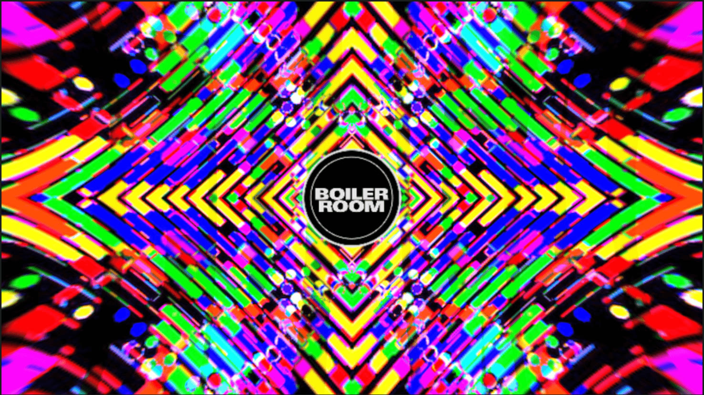
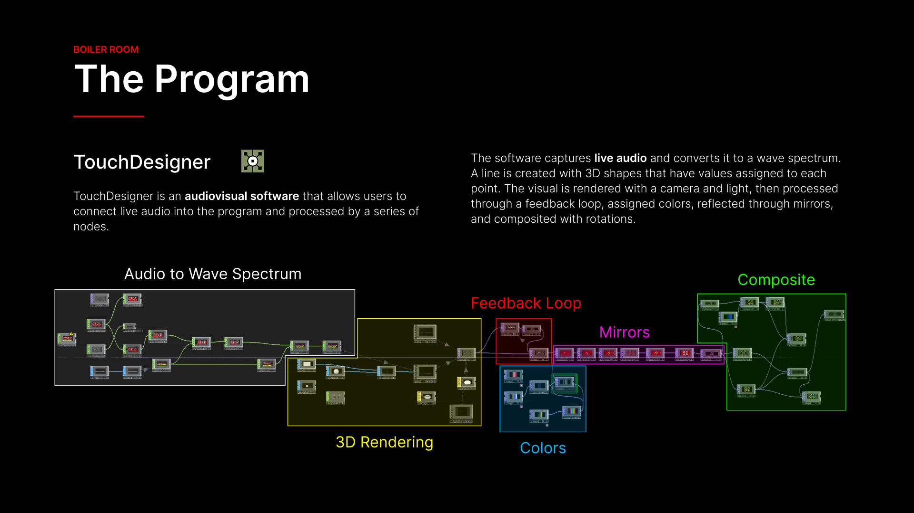

Case Study 03 — Live Visuals · Spec Work
Boiler Room
- Role
- Audio-reactive live visuals
- Tools
- TouchDesigner, After Effects
- Type
- Spec work — concert visuals
- When
- Spring 2026

StillOverview
This is a select few of the live concert visuals I created as spec work for Boiler Room, a live EDM venue with many artists and many different kinds of music.
I created these with TouchDesigner and After Effects to display the range of genres that Boiler Room encompasses.
Formats
One visual system, cut for different screen shapes. Click any of them to watch it larger, with sound.
Artists, scope & approach
Artists
Boiler Room hosts many artists across many kinds of music, so the visuals were made to range across those genres rather than fit just one.
This was spec work, designed around the sound of artists who have played Boiler Room:
- Kaytranada Spotify ↗
- Fred Again Spotify ↗
- ¥ØU$UK€ ¥UK1MAT$U
Scope
- Main title sequence 1920 × 1080 · 30 s
- Arena banner 1920 × 540 · 15 s loop
- Square loop 1080 × 1080 · 15 s
- Vertical loop 1080 × 1920 · 15 s
- Red vertical loop 1080 × 1920 · 11 s
Approach
Audio-reactive motion graphics, built in TouchDesigner and finished in After Effects.
TouchDesigner captures live audio and converts it to a wave spectrum. A line of 3D shapes takes its values from each point, is rendered with a camera and light, then runs through a feedback loop, gets its colours, is reflected through mirrors and composited with rotations.
